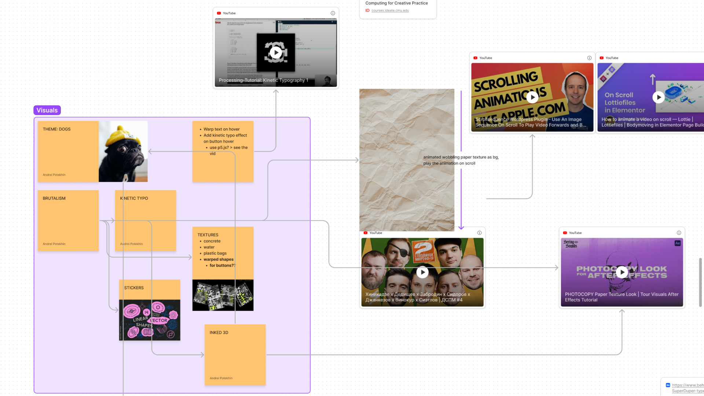
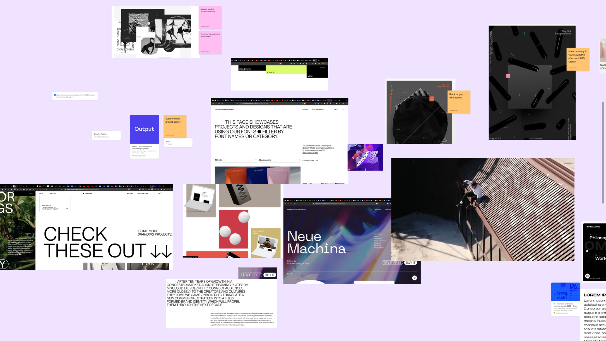
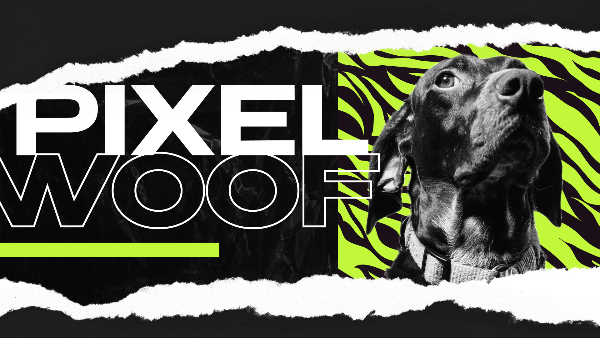
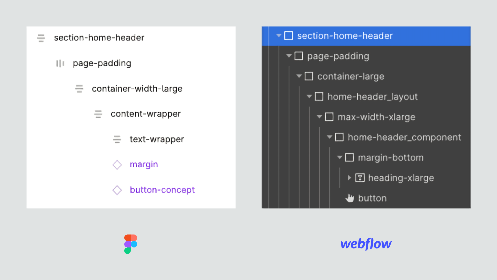
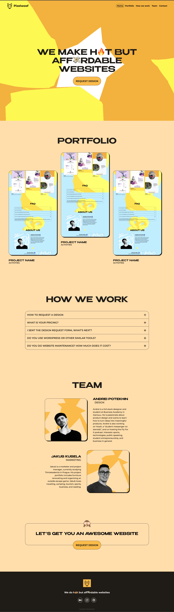
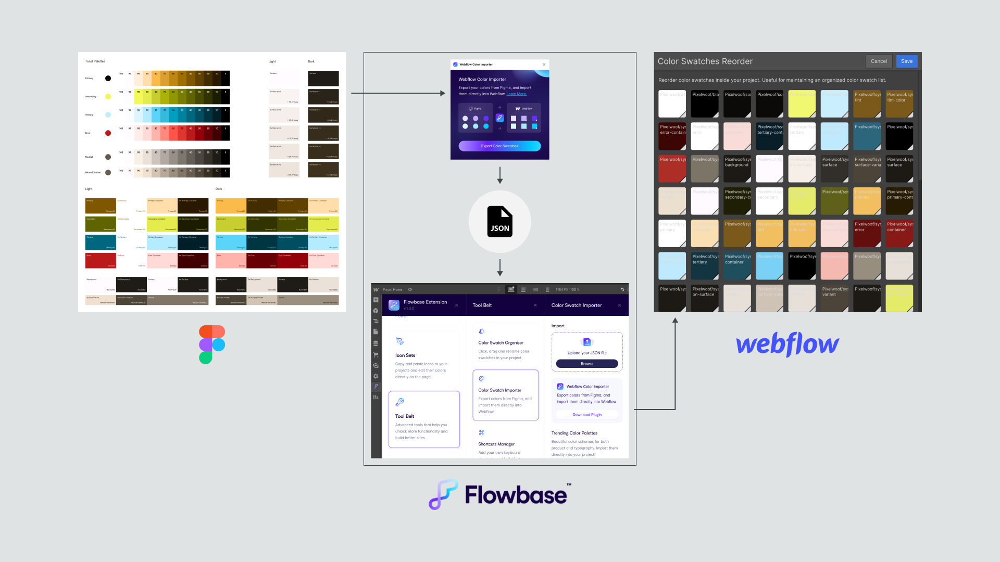
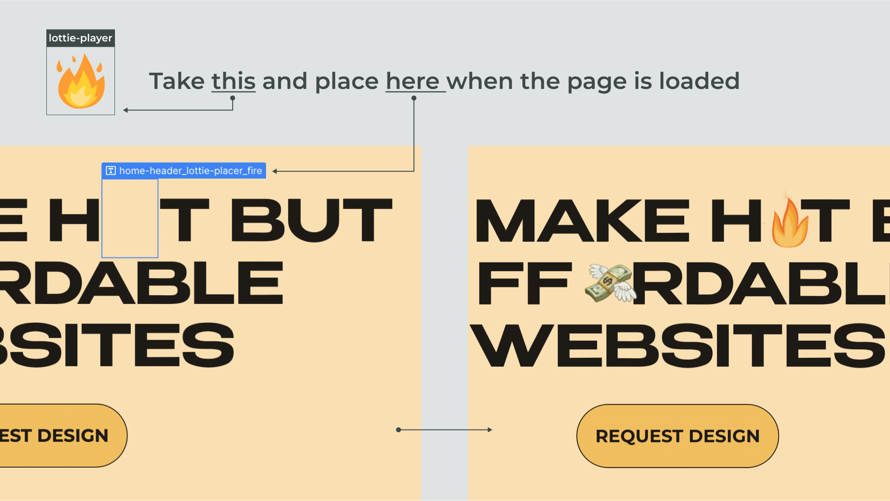

Background
My interest in learning how to create impressive web experiences recently turned into Pixelwoof. Pixelwoof is a creative duo of my friend Jakub, a marketer, and me, a designer. Under that name, we're offering hot but affordable websites for young entrepreneurs. And we surely needed a cool website ourselves. This case study describes the creation process of pixelwoof.com.
The requirements for this project were as follows:
- The major purpose of the website is to showcase our design capabilities;
- The look and feel should be relatable for young entrepreneurs, the target audience of the website;
Visual style
The first step was to convert the inner perception of the future site into a more solid form. I started my exploration by brainstorming ideas and gathering inspirational designs into a FigJam board.
 I was trying to figure out which visual style would match our offering (hot and affordable websites for young entrepreneurs) the best. It should be cheeky, playful, and maybe even slightly aggressive to be able to stand for a bold statement. At first, I thought that neo-brutalism would be perfect for expressing those features.
Then I came across an After Effects tutorial explaining how to get a photocopy-looking 3D animation.
Credits: Grant M. Fletcher
The sketchy and cartoony look, illustrated in the tutorial, inspired the visual principles I eventually designed:
- Cartoony low-poly look. It nicely matches the name Pixelwoof, as it can be associated with the word pixel. Outlining shapes with a thin stroke can help achieve the desired look, as it reminds the hand-drawn figures;
- Vibrant colors;
- Combining sharp and rounded shapes for the “breaking the rules” feeling;
- A font with cheeky geometry. I chose Benzin for headers and universal Montserrat for regular text.
The setup
The more I design, the more I value beforehand planning and testing. Having a clear understanding of what and how should be designed and built saves time and makes designing and developing more stable and comfortable.
In short, the setup of this project included a prototype in Figma designed with the Material color system, a build in Webflow constructed according to the Client-First guidance by Finsweet, and a custom 3D scene developed with three.js.
Prototyping the initial design
The Client-First System is a class-based style system for Webflow. Setting up the layout happens by wrapping elements into layout class combinations like .margin-top + .margin-large.
I decided to maintain a similar to Client-First structure in Figma. Yes, that takes extra time while designing and slightly overcomplicates the prototype with unnecessary wrapper layers. But it can save many minutes while transitioning from Figma to Webflow as the layers can be just copy-pasted as classes.
Despite that I was using the system for the first time and didn’t manage to set up the layer structure correctly, I still felt the increase in the design productivity.
Another useful tool I integrated into the workflow in this project was the Figma Tokens plugin. The plugin allows storing and reusing pretty much all styling properties: colors, typography, and borders. I’ve added the Client-First classes into the plugin, so I was able to apply them to the prototype components in one click. Combining tokens is not available on the free plan that I was on, but it still did a great job speeding up the styling.
The Client-First system and the Figma Tokens plugin are super powerful when tangoing together. Styling components with the system's classes and class combinations happens in a few clicks and results in a 100% Webflow-ready structure.
Learning
Webflow doesn’t have a built-in color tokens import functionality. That causes challenges when it's needed to import a whole Material color system with 300+ items.
For this build, I even tried exporting generated Material color tokens from Figma in .json and turning them into CSS classes. The idea was that I could use them instead of variables. Thus, $light-primary would become .bg-light-primary. That didn’t work out, as it would generate a mess of way too many classes in Webflow, especially paired with the class-based Client-First system.
Luckily, I found a much more elegant solution. Using the combination of a Figma plugin and a browser extension by Flowbase, color tokens can be easily imported into Webflow as native swatches. Awesome finding!
Developing the site in Webflow
With the Client-First system and imported color tokens, I built the structure of the site to match the prototype. During this project, I realized that the more time you spend preparing the prototype for translating into the build, the less the translation takes.
Adding the 3D scene
The most impressive element of the site is surely the 3D scene with a scroll-based animation. It was inspired by the After Effects video tutorial mentioned at the beginning. But it's one thing to come up with a concept, and quite another to create one. Especially with modest programming skills like mine.
First, I explored ways of building the scene with the p5.js library. It does allow manipulating 3D objects and even applying textures to them. However, to create a cartoon look of a scene, I felt that I needed a more powerful tool.
From my previous experience of working in a 3D environment, I was familiar with the structure of a scene: a mesh with textures, lights, and a camera. I also knew about shaders, which can be applied to the whole scene for creating desired effects. With its shader support, the three.js library looked very promising, and I decided to stick to it.
I experimented with loading 3D models into the scene but eventually decided to use a simpler shape that can be created with math without loading any models. I was happy to find awesome cartoon shaders on ShaderFrog, but I didn't manage to get them to work properly. Luckily a default three.js MeshToonMaterial was looking close to what I wanted.
After some googling for applicable code snippets and troublesome struggling to implement them, I set up the animations. Continuous floating feels like breathing, bringing life to the site. And scroll-dependent rotation and scaling create an engaging and immersive experience.
Once the animation was working in an isolated environment, it can be integrated into the build. I found an interesting implementation method: deploying the experience to Netlify via Github pages and embedding it to Webflow as an iframe. It was mostly working but changing z-index, to move the scene behind the main content, was breaking the scroll animation. After spending several hours unsuccessfully trying to fix the bug, I decided to add the whole code to the Webflow.
Adding Lottie animaitons
Emojis are part of the visual system of the site. They add playfulness and amusingness. Still emojis work fine, but to add more movement I used Lottie animations. I chose the most suitable assets from the free Lottifiles collection and imported them.
Webflow supports Lotties natively, so adding an animation to the CTA component was pretty straightforward.
Injecting emojis into the hero heading was more challenging. Coding myself I would probably proceed with the <h1>We build h<span><lottie-player></lottie-player></span>t and…</h1> structure. But Webflow doesn’t allow to add other than text spans in the text blocks, meaning that the lottie-player can’t be placed into the h1.
The workaround I found for this challenge was to use the allowed text spans as position setters for the animations. So, while the page is loading the header Lotties are chilling in the top left corner. Once it’s fully loaded jQuery snippet lands them to the allowed text spans’ positions. Voila!
As there is a 3D scene on the site, it might take a few moments to load. To make those moments less boring, I created a cute preload animation from the Pixelwoof logo in After Effects and added it as a Lottie.
Next steps
One of my biggest design-related insights recently was that you can always improve it later. The most important thing is to ship at least something. Thus, the current build isn’t perfect, and here are some ideas of how to improve it in the next iterations:
- Developing a more appealing contact page. The primary button now leads to a Google Form which is not that credible;
- Wrapping the portfolio project item into the Webflow CMS collection. It’s not urgent yet as there currently are only three projects, but as the list goes bigger it will be a must-have;
- Expanding the page structure of the site. All content now is located on the main page. I believe it would be useful to have a separate “how we work” page and a project description page for every portfolio item.
Conclusion
There were several challenges in this project. Most of them I overcame, and some forced me to compromise. But they all contributed to improving my web design skills.
Brainstorming the visual style is always one of the most exciting parts of a project. Translating the commercial offering into shapes, colors, and movement is fun. I believe the eventual style is appealing to the target audience of the site. Plus, the 3D experience showcases our design capabilities. That means that the final result matches the set requirements.
I tested Finsweet’s Client-First Style System. It might require a few more tries to fully understand it, but it’s undoubtedly made the building process clear and consistent. Maintaining the system’s naming and layout principles at the prototype stage blurs the line between Figma and Webflow and makes the transition copypastingly fast.
During the project, I also enhanced my design-driven programming skills. Adding a 3D scene with three.js and creating a workaround for Lottie animation helped me understand Javascript better. The more I learn programming the more opportunities I see for crafting thrilling web experiences.